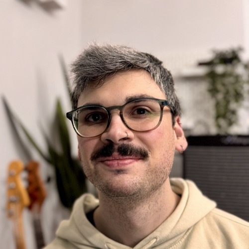

About
Product designer, Torino
I’ve been into technology since I was a kid, so solving problems with it was an easy choice. I started as a front-end developer, and I still bring a creative, hands-on approach to users’ problems.
What was missing was a fundamental element: knowing the user. Through research and analysis I now understand their needs, goals and problems, and build products with greater impact and a practical outlook. I’m collaborative, precise and curious, with a sharp eye for detail, and I’m not afraid of getting things wrong while experimenting.
Experience
-
Tinexta Innovation Hub
5 years 2 months · Torino, Piemonte, Italia
Associate Product Designer
- Worked both independently and within teams of various sizes designing and developing digital interfaces for sectors like energy, automotive, IoT and industrial automation, collaborating with Italian and international clients such as Haier, Lamborghini, Modula and Enercom.
- Handled the whole design process: from early research and envisioning to wireframes, prototypes and user flows for web, mobile and HMI platforms.
- Worked closely with developers, QA testers and stakeholders to ensure designed solutions were implemented correctly and to validate the user experience, using tools like Figma and Sketch.
Junior Product Designer
Product Designer Intern
-
Sostanza srl
Web Developer
- Web development of the LiveHelp suite with ASP technology.
- Design and development of LiveHelp's native iOS app with SwiftUI.
- Development of LiveHelp's native Android app for Nexi POS terminals.
- Development of responsive websites using HTML, CSS, jQuery and JavaScript.
-
IBM
Front-end Developer
- Designed and developed modules (using Angular 2+) based on technical documentation, ensuring operational efficiency requirements were met.
- Developed solutions based on module design and released them using continuous delivery.
- Front-end development of mobile webviews using the Angular 2+ and Ionic frameworks.
Outside work
Homebody and bass player, into sports and video games.